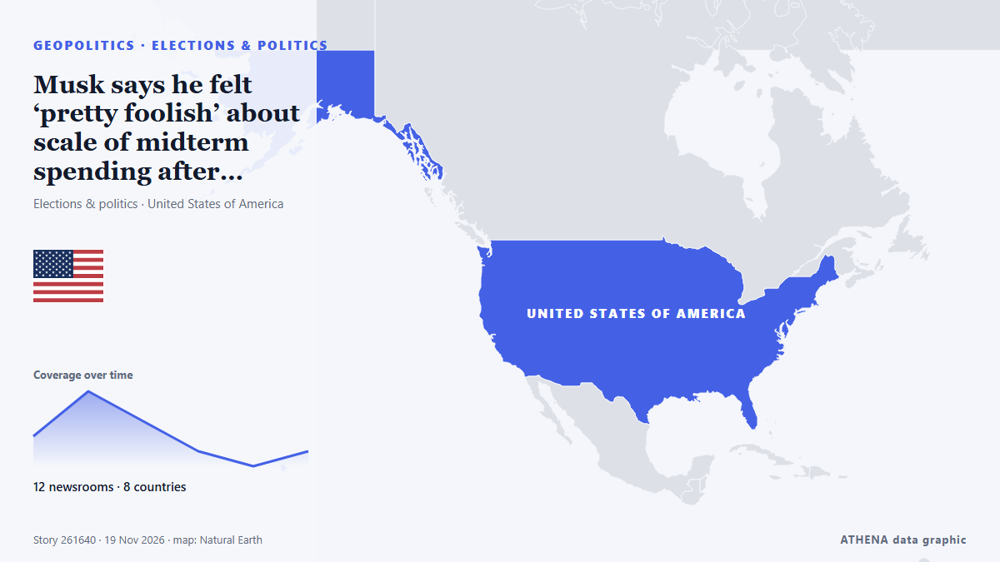

Εκλογές & πολιτική
ΧορηγούμενοΠαρουσιάζεται από  Cybernetics and Artificial Intelligence Lab Welcome to the Cybernetics and Artificial Intelligence Laboratory, established at the Department of Business Administration of the National and Kapodistrian University of Athens. The lab is headed by Professor Dimitrios Thomakos. The lab aims to do research that can be published in top venues. Our research uses tools and methods of Artificial Intelligence, and lies in the following areas: - Forecasting - Decision making - Cyber security - Finance We are always looking forward to collaborating with exceptional students!
Cybernetics and Artificial Intelligence Lab Welcome to the Cybernetics and Artificial Intelligence Laboratory, established at the Department of Business Administration of the National and Kapodistrian University of Athens. The lab is headed by Professor Dimitrios Thomakos. The lab aims to do research that can be published in top venues. Our research uses tools and methods of Artificial Intelligence, and lies in the following areas: - Forecasting - Decision making - Cyber security - Finance We are always looking forward to collaborating with exceptional students!
| 6 Νοε | 0 |
|---|---|
| 7 Νοε | 0 |
| 8 Νοε | 0 |
| 9 Νοε | 1 |
| 10 Νοε | 1 |
| 11 Νοε | 0 |
| 12 Νοε | 0 |
| 13 Νοε | 2 |
| 14 Νοε | 3 |
| 15 Νοε | 5 |
| 16 Νοε | 7 |
| 17 Νοε | 0 |
| 18 Νοε | 1 |
| 19 Νοε | 0 |
Οι τίτλοι των ειδήσεων παρουσιάζονται στα αγγλικά, όπως δημοσιεύτηκαν.

Musk says he felt ‘pretty foolish’ about scale of midterm spending after Republican rout
Nov 18 (Reuters) - Elon Musk said on Wednesday he felt "pretty foolish" about the amount of money he spent on this year's US midterm elections after Republicans suffered sweeping losses. από Daily Maverick
Israeli opposition elects Matan Kahana as new Knesset speaker
The parliament was sworn in on 10 November without a new government, after a deadlocked 27 October general election stripped Netanyahu of his majority. από The New Arab
Schumer confident in retaining US Senate Democratic leadership amid Van Hollen challenge
'I’m confident I’ll be the next leader,' says Senate's top Democrat. από Anadolu Agency (English)
Mary Peltola flips Republican Senate seat in Alaska
Former Rep. Mary Peltola, a Democrat, is projected to win the race for Senate in Alaska, defeating GOP incumbent Sen. από The Hill
Spain's government to raise minimum wage 5.3% as election looms
MADRID, Nov 16 - Spain's government plans to increase the minimum wage by 5.3% from next year, Labour Minister Yolanda Diaz said on Monday, marking the ninth raise under the Socialist-led… από The Straits Times
Serbia’s Student List deputies take seats in parliament after landmark election win
BELGRADE, Nov 17 - Serbia's Student List lawmakers entered parliament on Tuesday, cheered on by hundreds of supporters, after their October election victory ended 14 years of rule by the Serbian… από The Straits Times
Le Pen says France will keep giving Ukraine aid if she is elected
PARIS, Nov 16 - French far-right leader Marine Le Pen said on Monday that France would continue to give Ukraine material and humanitarian assistance if she is elected president next spring. από The Straits Times
Widow of Haiti's slain leader Moise to contest presidential election
PORT-AU-PRINCE, Nov 15 - Martine Moise, the widow of Haiti's last president whose 2021 assassination was a major turning point for the nation, has registered as a candidate for the first presidential… από The Straits Times
Israeli opposition chiefs denounce Netanyahu over 'attempted coup'
Israeli opposition leaders have accused former Prime Minister Benjamin Netanyahu of orchestrating an ‘attempted coup’ targeting an Arab-Israeli party. από Arab News
With US midterms underway, courts rebuff Trump's pressure on state election officials
Nov 3 - In the hours before polls opened for the US midterm elections on Tuesday, federal judges issued a series of rulings restricting the Trump administration's unprecedented efforts to pressure… από The Straits Times
‘Emperor’s New Clothes’: Burnham breaks 10-year taboo on Brexit
Boris Johnson's 'oven ready' Brexit deal never tasted very good. από EUobserver
[Register now] How Scott Colom won a Senate race: A post-election Q&A with Mississippi Today’s politics team
Mississippi Today's politics team is having an online Q&A session about Scott Colom's victory in the U.S. από Mississippi Today
Gilbert Houngbo re-elected to lead UN labour agency for second term
Former Togo prime minister Gilbert Houngbo has secured a second five-year term as head of the UN's International Labour Organization. από Africanews (English)
Eisenkot says Netanyahu cannot stay in office 'a minute longer'
Eisenkot launched a scathing attack on his rival hours after representatives of the two men met to discuss the prospects of a national unity government. από The New Arab
Cape Verde: Neves Wins Second Term As Cape Verde's President
[RFI] José Maria Neves has won a second five-year term as Cape Verde's president, according to provisional results from Sunday's election. από AllAfrica
South Sudan postpones first post-independence national elections to February 2027
By Nana Karikari, Senior International Affairs and Political Analyst South Sudan has postponed its first presidential and parliamentary elections to February 11, 2027. από GBC Ghana Online
Carney says Canada could turn to Chinese automakers if Trump trade talks fail
PHNOM PENH, Cambodia (AP) — Canadian Prime Minister Mark Carney said that Canada could turn to Chinese automakers if trade negotiations with U.S. από The Canadian Press (via CityNews)
Ex-Bangladesh PM Hasina to return home despite 'threat of death'
Ousted Bangladesh prime minister Sheikh Hasina, sentenced to capital punishment after she was toppled in 2024, told AFP on Monday that she would return home in December despite "t... από Oman Observer
Cabo Verde Votes as Incumbent Is Favored
Voting is under way in Cabo Verde, where President José Maria Neves is the favourite among six candidates. από The Rio Times